Yame
Yame · Fukuoka
Yame
Highlighted on the Fukuoka map.

Sights
Yame Joyo Festival
Yame Chuodai Chaen

Yabe Kawazoi no Higan Hana

Yame Fukushima no Shirakabe no Streetscape

Hyuga Kami Kyo

Yabe Kawa no Kosumosu
Hoshi no Bunka Kan
Bengara Village
Hikyo Soma no Sato Keiryu Park
Yame Dentokogei Kan
Cha no Bunka Kan
Yoshibi no Tanada (Yame Kuroki Town)
Green Monster
Yame Te Suki Washi Museum
Yame Kanko Bussan Kan Tokimeki
Yame Kuroki Oto Festival (Susano Shrine)
Guriinpia Yame Rejapuru
Roadside Station Tachibana
Dining
もつ蔵
Motsu Kura
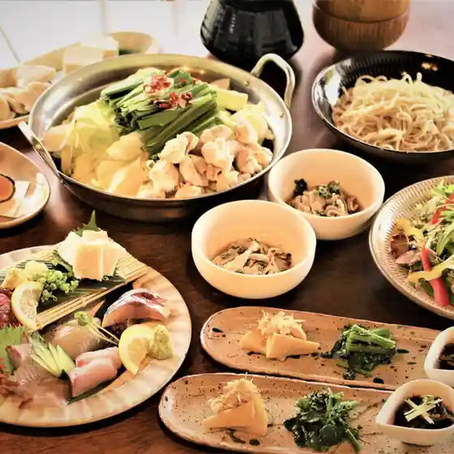
和風居酒屋 かすがひ
Wafuu Izakaya Kasugahi
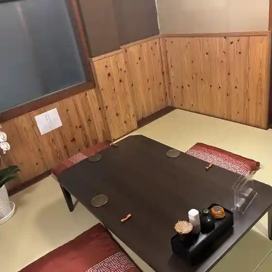
猫ダイニングＡ・caT
Neko Dainingu A ・ Cat
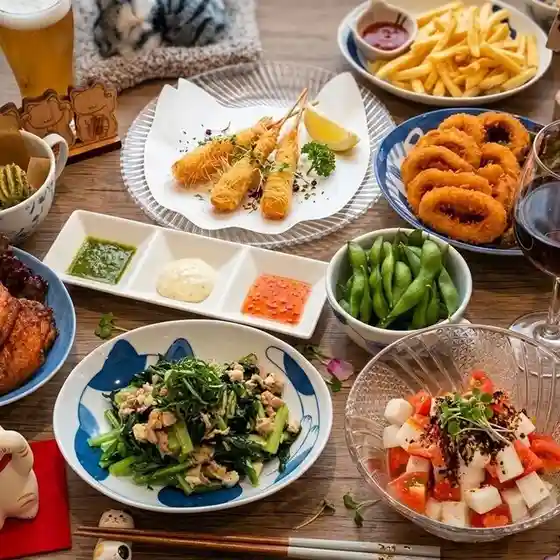
炉ばた 楽助
Ro Bata Raku Jo
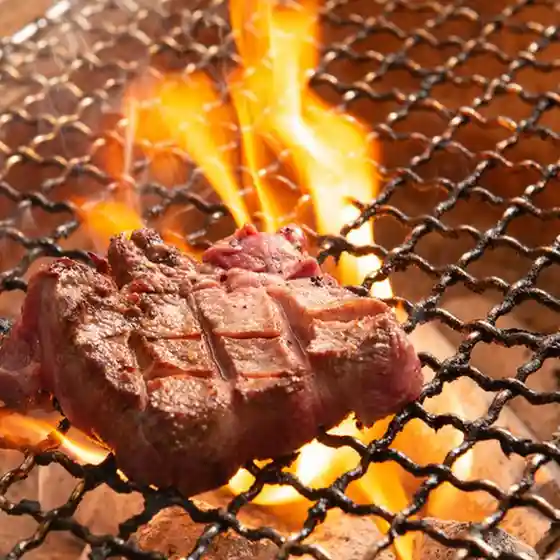
原始焼き酒場 ととり
Genshi Yaki Sakaba Totori
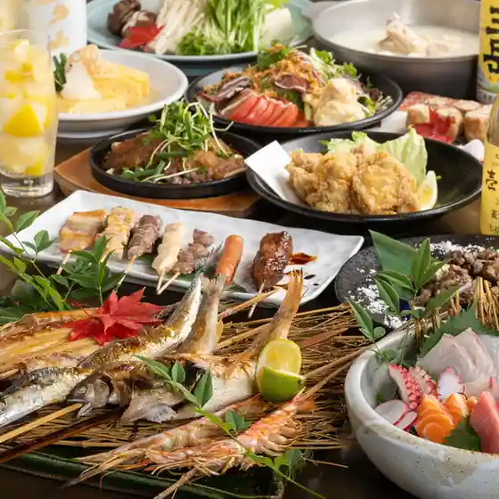
虎のこ
Tora Noko
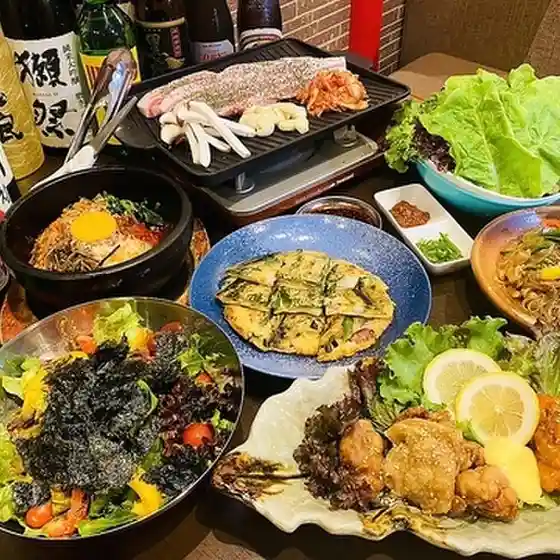
焼肉 龍王館 八女店
Yakiniku Ryuuou Kan Yame Mise
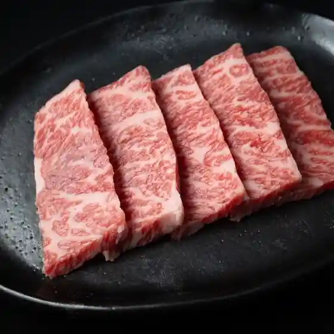
黒豚屋
Kurobuta Ya
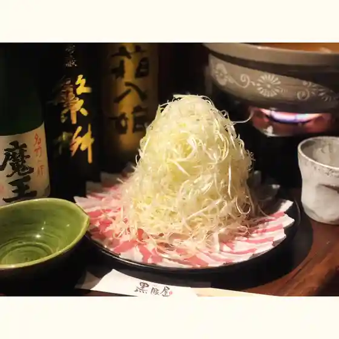
ルアン 風の 八女福島
Ruan Kaze No Yame Fukushima
黒毛和牛と生牛タンが旨い店 焼肉炙家 八女店
Kuroge Wagyuu To Nama Gyuutan Ga Umai Mise Yakiniku Sha Ie Yame Mise
和流みうら
Wa Ryuu Miura
仙人掌
Saboten
DOMUS YAME
Domus Yame
酒肴 さか田
Shukou Saka Ta
とんかつ 森弘
Tonkatsu Morihiro
坂口酒店
Sakaguchi Saketen
山海関
Sankai Kan
花うさぎ
Hana Usagi
野田製菓
Noda Seika
おなかすいた
Onakasuita
星の村カフェ&ジムSora
Hoshi No Mura Kafe &Amp; Jimu Sora
ミニストップ 八女鈍土羅店
Minisutoppu Yame Don Tsuchi Ra Mise
そば季里 史蔵
Soba Ki Sato Shi Kura
オクノ食堂
Okuno Shokudou
奥八女ジビエ食肉センターくろ木
Oku Yame Jibie Shokuniku Sentaa Kuro Ki
il. cafe&ristorante
Il . Cafe&Amp;Ristorante
星野温泉 池の山荘
Hoshinoonsen Ike No Sansou
ほたる茶屋
Hotaru Chaya
らんぷてい
Ranputei
かぶと万十 津ノ江店
Kabuto Man Juu Tsu No Kou Mise
だるまラーメン
Daruma Raamen
うまかもん本舗 志むろ
Umakamon Honpo Kokorozashi Muro
GALA&DISH
Gala&Amp;Dish
UNOIKE's Green Cafe～和～
Unoike'S Green Cafe ~ Wa ~
kumu
Kumu
ステーキダイニング 檜
Suteekidainingu Hinoki
まんてん
Manten
いりえ茶園
Irie Chaen
山の民 つづら
Yama No Tami Tsuzura
江崎食品
Ezaki Shokuhin
鳥金精肉店
Tori Kinsei Niku Mise
古賀金酒場
Koga Kin Sakaba
たにがわ亭
Tanigawa Tei
アトリエ&カフェ果実
Atorie &Amp; Kafe Kajitsu
居酒屋ムロ
Izakaya Muro
かくれ庵
Kakure Iori
らーめん屋 天照 八女ゆめタウン店
Raamen Ya Amaterasu Yame Yume Taun Mise
本町大衆酒場 鴻臚
Honchou Taishuu Sakaba Kouro
立花精肉
Tachibana Seiniku
旬彩割烹なかむら
Jun Sai Kappou Nakamura
ASTRA CAFE & LIBRARY
Astra Cafe &Amp; Library
中村屋
Nakamuraya
サンタカフェベーカリー
Santakafebeekarii
ECRU
Ecru
華さん食堂 八女店
Hana San Shokudou Yame Mise
蒼とねじ
Ao Toneji
海鮮処 まるみつ
Kaisen Tokoro Marumitsu
オアシス神
Oashisu Kami
らく田屋食堂
Raku Taya Shokudou
NhaConMeo
Nhaconmeo
Soba Dokoro Nakashima Yame Fukuoka Prefecture Kyushu
Soba Dokoro Nakashima Yame Fukuoka Prefecture Kyushu
Soba Dokoro Nakashima Yame Fukuoka Prefecture Kyushu
Soba Dokoro Nakashima Yame Fukuoka Prefecture Kyushu
Soba Dokoro Nakashima Yame Fukuoka Prefecture Kyushu
Soba Dokoro Nakashima Yame Fukuoka Prefecture Kyushu
Soba Dokoro Nakashima Yame Fukuoka Prefecture Kyushu
Soba Dokoro Nakashima Yame Fukuoka Prefecture Kyushu
Restaurant Clairetulle Yame Fukuoka Prefecture Kyushu
Restaurant Clairetulle Yame Fukuoka Prefecture Kyushu
Restaurant Clairetulle Yame Fukuoka Prefecture Kyushu
Restaurant Clairetulle Yame Fukuoka Prefecture Kyushu
Restaurant Clairetulle Yame Fukuoka Prefecture Kyushu
Restaurant Clairetulle Yame Fukuoka Prefecture Kyushu
Restaurant Clairetulle Yame Fukuoka Prefecture Kyushu
Restaurant Clairetulle Yame Fukuoka Prefecture Kyushu
Sobakirhi Fumikura Yame Fukuoka Prefecture Kyushu
Sobakirhi Fumikura Yame Fukuoka Prefecture Kyushu
Sobakirhi Fumikura Yame Fukuoka Prefecture Kyushu
Sobakirhi Fumikura Yame Fukuoka Prefecture Kyushu
Sobakirhi Fumikura Yame Fukuoka Prefecture Kyushu
Sobakirhi Fumikura Yame Fukuoka Prefecture Kyushu
Sobakirhi Fumikura Yame Fukuoka Prefecture Kyushu
Sobakirhi Fumikura Yame Fukuoka Prefecture Kyushu
Fumichan no Misoshiruyasan Yame Fukuoka Prefecture Kyushu
Fumichan no Misoshiruyasan Yame Fukuoka Prefecture Kyushu
Fumichan no Misoshiruyasan Yame Fukuoka Prefecture Kyushu
Fumichan no Misoshiruyasan Yame Fukuoka Prefecture Kyushu
Fumichan no Misoshiruyasan Yame Fukuoka Prefecture Kyushu
Fumichan no Misoshiruyasan Yame Fukuoka Prefecture Kyushu
Fumichan no Misoshiruyasan Yame Fukuoka Prefecture Kyushu
Fumichan no Misoshiruyasan Yame Fukuoka Prefecture Kyushu
Beef Tei Yame Fukuoka Prefecture Kyushu
Beef Tei Yame Fukuoka Prefecture Kyushu
Beef Tei Yame Fukuoka Prefecture Kyushu
Beef Tei Yame Fukuoka Prefecture Kyushu
Beef Tei Yame Fukuoka Prefecture Kyushu
Beef Tei Yame Fukuoka Prefecture Kyushu
Beef Tei Yame Fukuoka Prefecture Kyushu
Beef Tei Yame Fukuoka Prefecture Kyushu
Yamecha Cafe Bumbuku Yame Fukuoka Prefecture Kyushu
Yamecha Cafe Bumbuku Yame Fukuoka Prefecture Kyushu
Yamecha Cafe Bumbuku Yame Fukuoka Prefecture Kyushu
Yamecha Cafe Bumbuku Yame Fukuoka Prefecture Kyushu
Yamecha Cafe Bumbuku Yame Fukuoka Prefecture Kyushu
Yamecha Cafe Bumbuku Yame Fukuoka Prefecture Kyushu
Yamecha Cafe Bumbuku Yame Fukuoka Prefecture Kyushu
Yamecha Cafe Bumbuku Yame Fukuoka Prefecture Kyushu
Hideya Yame Yame Fukuoka Prefecture Kyushu
Hideya Yame Yame Fukuoka Prefecture Kyushu
Hideya Yame Yame Fukuoka Prefecture Kyushu
Hideya Yame Yame Fukuoka Prefecture Kyushu
Hideya Yame Yame Fukuoka Prefecture Kyushu
Hideya Yame Yame Fukuoka Prefecture Kyushu
Hideya Yame Yame Fukuoka Prefecture Kyushu
Hideya Yame Yame Fukuoka Prefecture Kyushu
Yamano Tami Tsuzura Yame Fukuoka Prefecture Kyushu
Yamano Tami Tsuzura Yame Fukuoka Prefecture Kyushu
Yamano Tami Tsuzura Yame Fukuoka Prefecture Kyushu
Yamano Tami Tsuzura Yame Fukuoka Prefecture Kyushu
Yamano Tami Tsuzura Yame Fukuoka Prefecture Kyushu
Yamano Tami Tsuzura Yame Fukuoka Prefecture Kyushu
Yamano Tami Tsuzura Yame Fukuoka Prefecture Kyushu
Yamano Tami Tsuzura Yame Fukuoka Prefecture Kyushu
Anata no Kokoro wo Washizukami Yame Fukuoka Prefecture Kyushu
Anata no Kokoro wo Washizukami Yame Fukuoka Prefecture Kyushu
Anata no Kokoro wo Washizukami Yame Fukuoka Prefecture Kyushu
Anata no Kokoro wo Washizukami Yame Fukuoka Prefecture Kyushu
Anata no Kokoro wo Washizukami Yame Fukuoka Prefecture Kyushu
Anata no Kokoro wo Washizukami Yame Fukuoka Prefecture Kyushu
Anata no Kokoro wo Washizukami Yame Fukuoka Prefecture Kyushu
Anata no Kokoro wo Washizukami Yame Fukuoka Prefecture Kyushu
Mr George Yame Inter Yame Fukuoka Prefecture Kyushu
Mr George Yame Inter Yame Fukuoka Prefecture Kyushu
Mr George Yame Inter Yame Fukuoka Prefecture Kyushu
Mr George Yame Inter Yame Fukuoka Prefecture Kyushu
Mr George Yame Inter Yame Fukuoka Prefecture Kyushu
Mr George Yame Inter Yame Fukuoka Prefecture Kyushu
Mr George Yame Inter Yame Fukuoka Prefecture Kyushu
Mr George Yame Inter Yame Fukuoka Prefecture Kyushu
Stay
八女グリーンホテル
Yame Guriinhoteru
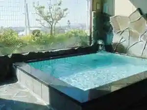
Ｃｒａｆｔ Ｉｎｎ 手（クラフトイン テ）
C R A F T I N N Te ( Kurafutoin Te )
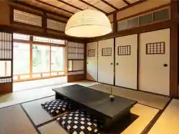
ＲＩＴＡ八女福島
R I T A Yame Fukushima
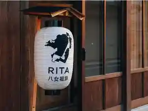
風の八女福島（旧：NIPPONIAHOTEL八女福島商家町）
Kaze No Yame Fukushima ( Kyuu : Nipponiahotel Yame Fukushima Shouka Machi )
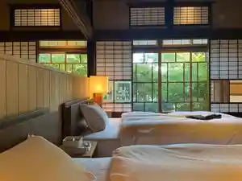
HOTEL AZ 福岡八女店
Hotel Az Fukuoka Yame Mise

男ノ子焼の里
Otoko No Ko Yaki No Sato
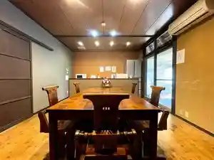
リゾートホテル上陽
Rizootohoteru Jouyou
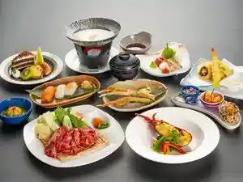
太田旅館
Oota Ryokan
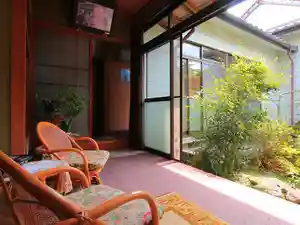
くつろぎの森 グリーンピア八女
Kutsurogino Mori Guriinpia Yame
星の文化館
Hoshi No Bunka Kan
星野温泉 池の山荘
Hoshinoonsen Ike No Sansou
奥星野農家の宿 緑の洞
Oku Hoshino Nouka No Yado Midori No Hora